164 gráficos · A-animated: 7 · Electricity story 7/7 · mount + updateScene ·
prosa entre bloques · librería reutilizable.
Doc: LEARNINGS · Inventario 164
· Gallery estilo Atlas →
164 piezas · inventario ordenado · animated = library motion
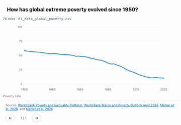
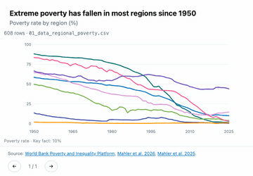
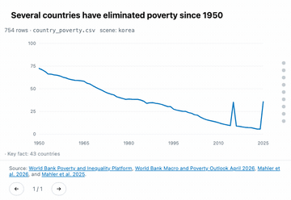
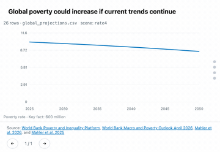
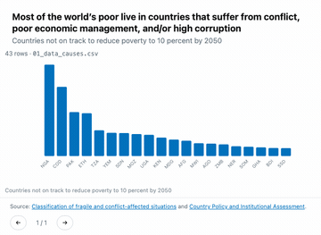
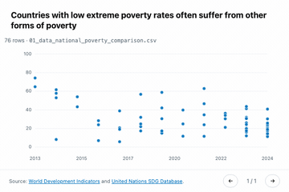
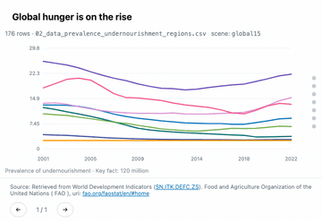
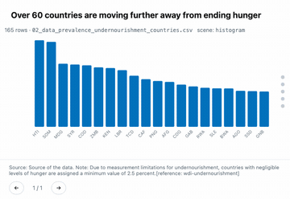
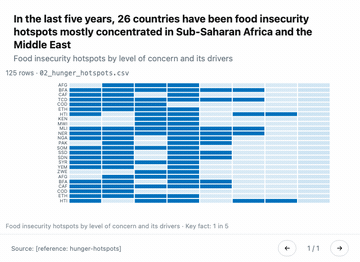
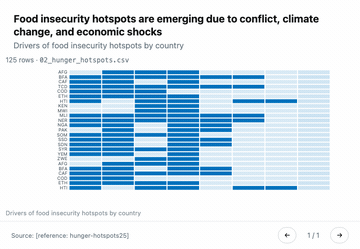
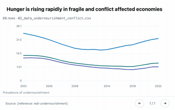
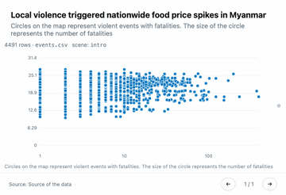
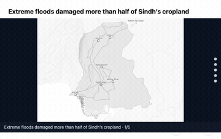
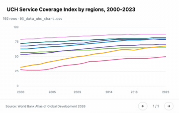
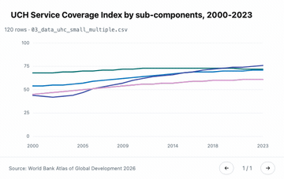
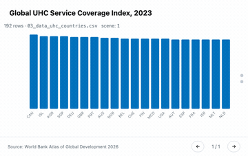
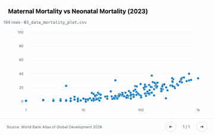
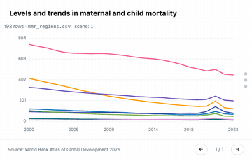
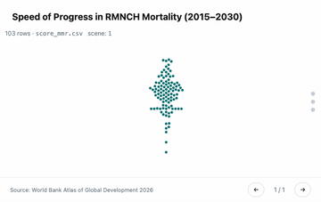
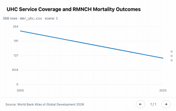
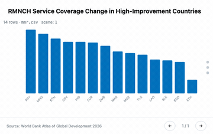
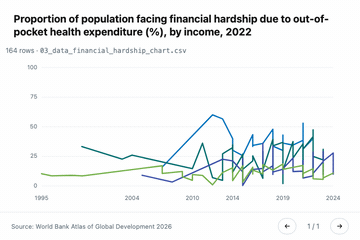
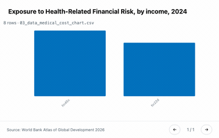
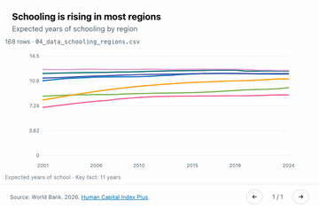
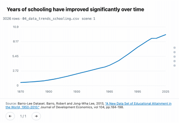
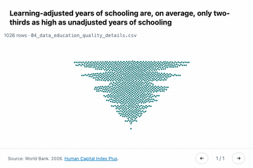
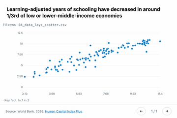
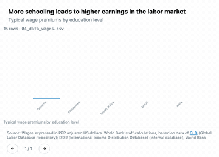
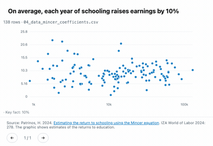
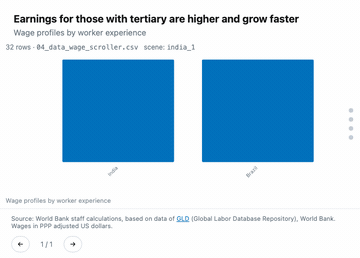
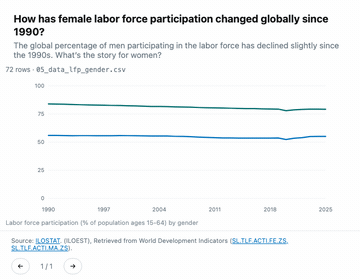
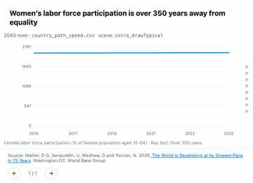
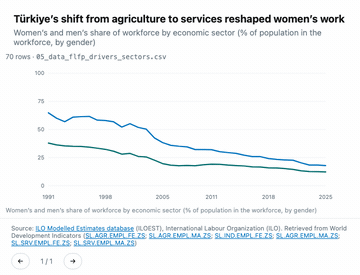
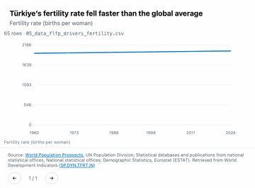
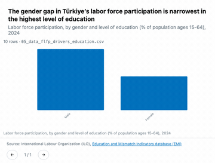
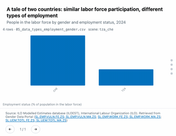
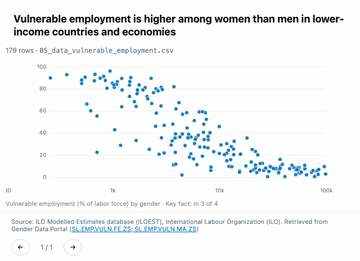
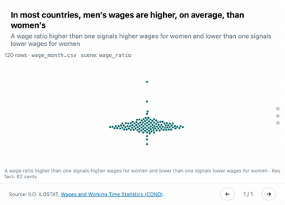
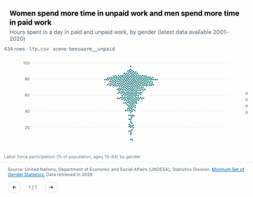
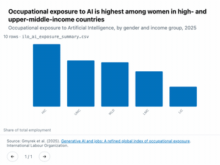
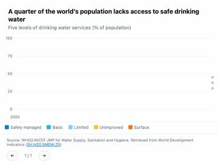
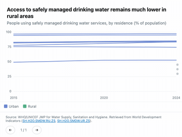
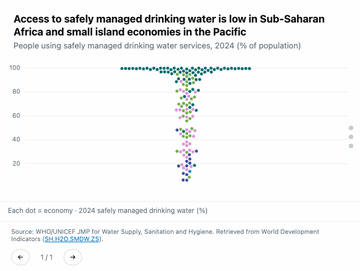
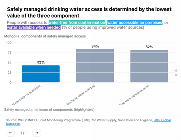
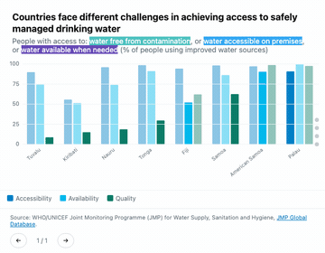
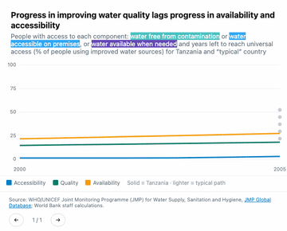
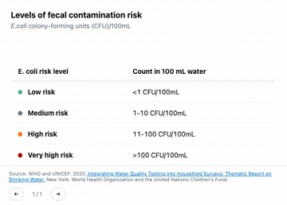
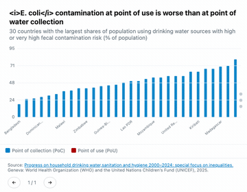
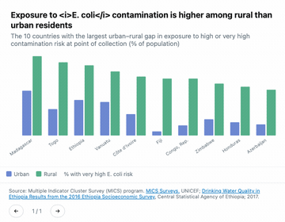
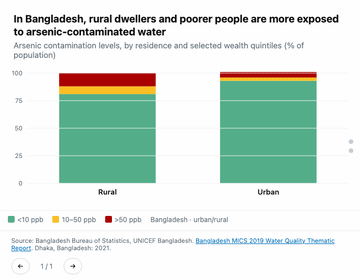